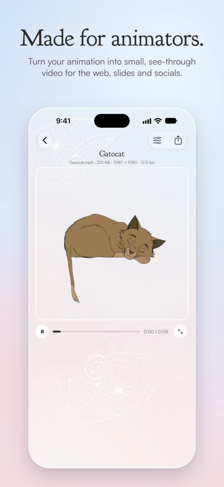
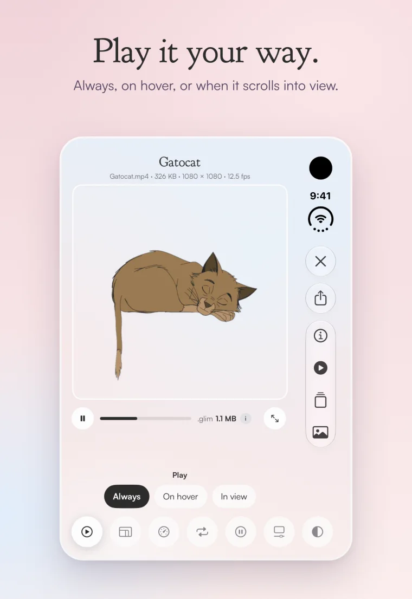
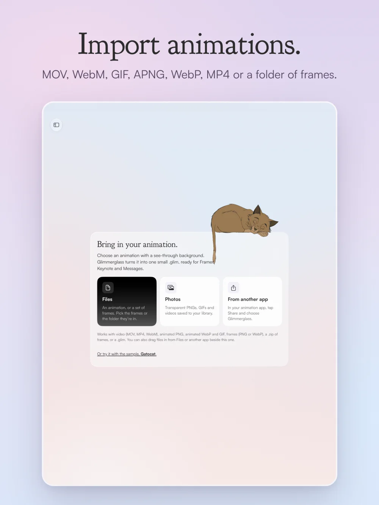
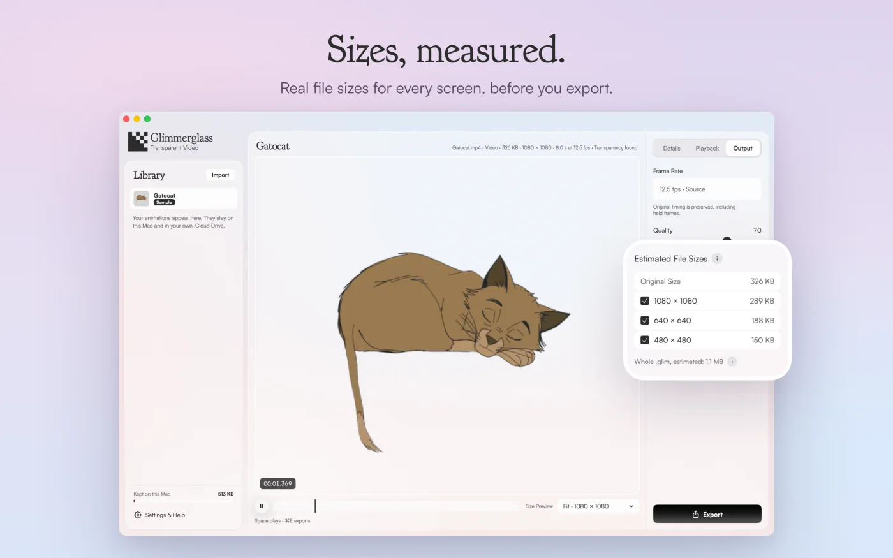

Updated 31 October 2026
What’s new.
Every change to the Glimmerglass Framer plugin, the Apple app, the conversion service and this website, newest first.
In review · Apple app
Glimmerglass 1.0 for iPhone, iPad and Mac
Sent to Apple for App Review on 30 October. It isn’t on the App Store yet: this entry gets a date when it is.




- Import a transparent animation: MOV, MP4, WebM, animated PNG, WebP or GIF, a folder or .zip of frames, or a .glim.
- Check the transparency against white, black, green, magenta or blue, choose how it plays, and see real file sizes for every size before you export.
- Send it anywhere: a .glim for the web, a see-through .mov for Keynote and Final Cut Pro, chroma-key video for TikTok, CapCut and Shorts, or a Telegram sticker.
- Converting happens on your device and works offline. No account, no subscription, no ads, no tracking. One purchase covers iPhone, iPad and Mac.
- The purchase includes a key for the Framer plugin. The conversion service can now issue that key from Apple’s purchase record, with no name, email or account, and it keeps nothing from the request.
In review · Framer plugin
Plugin 0.1.2
- The minimise button is now a round button in the top-right corner of the plugin, instead of a dash under the logo.
- “Buy a key” opens glimmerglass.app, which takes you on to Gumroad, and the plugin no longer carries a support email address. Framer’s review asked for both. For help, use Get support.
Sent to Framer on 27 October. It reaches you through the Marketplace once Framer has reviewed it.
31 October 2026 · Website
A newer web player, and corrections
- The web player on this site now follows a .glim’s Playback settings: playing on hover or in view, pausing, speed and the rest. The embed code from ChatGPT, Claude and other assistants loads this player, so those settings now work on your own site.
- On iPhone, the first video now starts as soon as its size is known.
- Corrected: the blue knight’s largest video is 212 KB, not 117 KB.
- The Apple app guide now matches the app sent for review.
- The footer now links to Connect an assistant, and Questions covers assistants.
30 October 2026 · Assistants
Glimmerglass in Claude
- The connector now works properly in Claude: it asks you to sign in when you first convert, and plays animations in the chat with their Playback settings.
- Claude cannot pass a file you attach to a connector, so it gives you a private page to upload your animation on. The file goes straight to the conversion service. See privacy.
- The sign-in page now says where it will return you to.
30 October 2026 · Website
A menu on phones, terms and sign-in
- New: terms of service, and a privacy section for ChatGPT, Claude and other assistants. In an assistant you now sign in with your license key on a Glimmerglass page, never in the chat.
- On a phone, the links at the top of every page now fold behind a Menu button.
29 October 2026 · Website
Your license, and assistants
- A new page, Your license, says what a key unlocks and how to use it.
- A new page, Connect an assistant, sets out how ChatGPT, Claude and coding agents connect to Glimmerglass. The connection is open: assistants can now convert an animation with your key and show it playing in the chat.
28 October 2026 · Conversion service
Content Credentials: conversion service passes conformance
- The C2PA Conformance Program has found the Glimmerglass conversion service conformant, at assurance level 1, against version 2.4 of the Content Credentials specification. It’s on C2PA’s public Conforming Products List.
- What it covers: MP4 files made on the conversion service, which the Framer plugin uses, each with a Content Credential signed inside the file recording that the service converted it and what it was made from. WebM files can’t hold a Content Credential, so they aren’t covered.
- The Apple app isn’t covered. It converts on your device and never sends your files to the service, so this result doesn’t apply to it.
- Glimmerglass never claims a file was filmed or captured. The credential only records what the service did.
- Signing isn’t switched on yet. Next comes a signing certificate from a C2PA-recognised authority, which this result lets us apply for. Until then, conversions come out exactly as before.
When signing goes live, it gets its own entry here.
27 October 2026 · License service and website
License activation fixed for the Marketplace plugin
- Entering a key in the plugin installed from the Framer Marketplace could fail with “Could not reach the license service”. The Marketplace runs the plugin from its own web address, and the license server only accepted the address used during Framer’s review. The server now accepts the Marketplace plugin too. Your key was never the problem: enter it again and it works.
- The server now accepts the plugin from any address Framer runs it from, so a new plugin version can’t lock buyers out the same way. Every license check and conversion still needs a valid key.
- A daily automatic check now confirms the service is up, accepts the Marketplace plugin, refuses requests without a valid key and can reach Gumroad. If any of that breaks, we hear about it the same day.
- Checked on the live server the same day: a real key activates and converts from the Marketplace plugin, and a missing or unknown key is still refused before any conversion starts.
- The privacy page now says that the plugin’s fonts are built in. It still said they loaded from Fontshare, which stopped with 0.1.1.
21 October 2026 · Framer plugin and website
Plugin 0.1.1 on the Framer Marketplace
- Glimmerglass is on the Framer Marketplace. Install it from Framer and unlock it with your key.
- The Satoshi typeface now ships inside the plugin, so the plugin no longer loads fonts from another service.
- Website: “Get it on Framer” now opens the Marketplace listing, the Framer page has a new workflow film, and a Questions page answers the common ones.
- The privacy page now has separate sections for the Apple app and the Framer plugin.
19 October 2026 · Website
A new glimmerglass.app
- Redesigned home, Framer plugin and .glim file pages.
- Every animation on this site is a Glimmerglass conversion, made with the plugin on the same service you use.
- The Framer page shows the price: $8, one payment, a lifetime license.
15 October 2026 · License service
License checks, ready for launch
- The server checks every key with Gumroad. A key whose purchase is refunded or charged back stops working.
- The server checks the key again before each conversion starts, not only when you enter it.
- Your license is for you, on your own browsers and computers. There’s a soft limit of 5 browsers: going over it never locks you out.
- Each browser’s activation renews whenever the plugin checks in, and lapses after 30 days unused. “Remove license from this browser” frees it at once.
- Only a shared key hits the hard limits: more than 5 new browsers in a day or 20 in 30 days, or more than 30 conversions an hour or 120 a day. Those are paused for a while.
- The server keeps a one-way fingerprint of each key and browser, never the key itself.
Something not working? Get support.